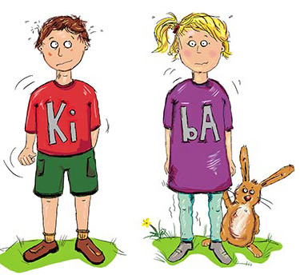

Herzlich Willkommen
auf der Homepage der Kiba-Studie!
Auf den folgenden Seiten möchten wir Sie
über das Forschungsprojekt
„Kinder bewältigen Angst (KibA)“
informieren.
Das Projekt steht unter der Leitung von Prof. Dr. Silvia Schneider,
Lehrstuhl für Klinische Kinder- und Jugendpsychologie an der
Ruhr-Universität Bochum, und ist Teil des deutschlandweiten
Forschungsverbunds PROTECT-AD. Das Projekt beschäftigt sich mit der
Optimierung der Behandlung von
Angststörungen und wird vom Bundesministerium für
Bildung und Forschung (BMBF) gefördert.
Die Studie
„Kinder bewältigen Angst“...
• befasst sich mit der Behandlung von Kindern mit
Angststörungen.
• möchte herausfinden, wie Kindern mit Angststörungen und ihren Eltern
psychotherapeutisch optimal geholfen werden kann.
• wird an sechs deutschen Universitäten (Bochum, Dresden,
Freiburg, Landau, Marburg
und Würzburg)
gemeinsam durchgeführt.
Dabei liegt
der Fokus des Projekts darauf, in wieweit es sinnvoll ist, die
Behandlung auf das Kind allein zu konzentrieren oder
die Eltern gleichermaßen in die Behandlung
miteinzubeziehen. Dieses Projekt möchten wir Ihnen hier vorstellen.
Vielen Dank für Ihr Interesse an unserer Forschung!

Sollten Sie Fragen haben, die über die Informationen der Homepage
hinausgehen,
kontaktieren Sie uns gerne unter:
KibA-Team-Bochum@rub.de